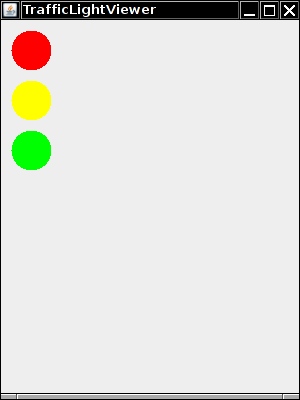

Programming Assignment
2
DUE at the starting of the class on 10/17/2007 (Monday)
Do the following questions from the text book:
1) Exercise
R2.9: Find the errors in the following statements
a) Rectangle r = (5, 10, 15, 20);
b) double width = Rectangle(5, 10, 15, 20).getWidth();
c) Rectangle r;
r.translate(15, 25);
d) r = new Rectangle();
r.translate(“far, far away!”);
2) Exercise P2.7: The random class implements a random number generator, which produces sequences of numbers that appear to be random. To generate random integers you construct an object of the Random class, and then apply the nextInt method. For example, the call generator.nextInt(6) gives you a random number between 0 and 5.
Write a program DieSimulator that uses the Random class to simulate
the cast of a die, printing a random number between 1 and 6 every time that
the program is run.
3) Complete the following component class to show a traffic light such as this one:

import javax.swing.JComponent;
import java.awt.Color;
import java.awt.Graphics;
import java.awt.Graphics2D;
import java.awt.geom.Ellipse2D;
public class TrafficLightComponent extends JComponent
{
public void paintComponent(Graphics g)
{
Graphics2D g2 = (Graphics2D) g;
// your work here
. . .
}
}
A viewer class has been provided for you. Format the code according to the class style.
Hand in to the instructor:
Hardcopy of the assignment, application and its output
Bring softcopy of java files, class files, HTML file in a folder (titled by
your name).